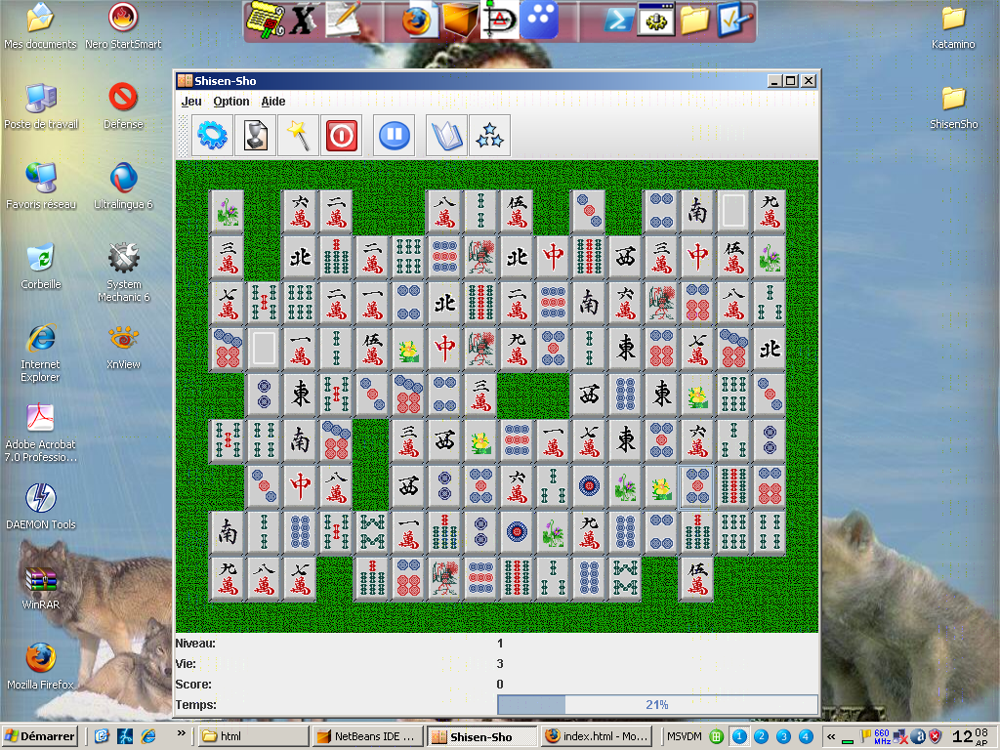

Le menu
Jeu
Le
menu jeu permet au jouer de controler les differents status du jeu en cours:
Termine la partie en cours
et en demarre une nouvelle.
- Jeu->Meilleurs Scores (Ctrl+M)
Affiche les dix meilleurs joueurs.
Montre une solution possible, mais te retire une vie.
Si le score est dans les dix meilleurs, le sauvegarde, et quitte le jeu
Mets le jeu en pause en arretant le chrono, et en cachant le plateau de jeu.